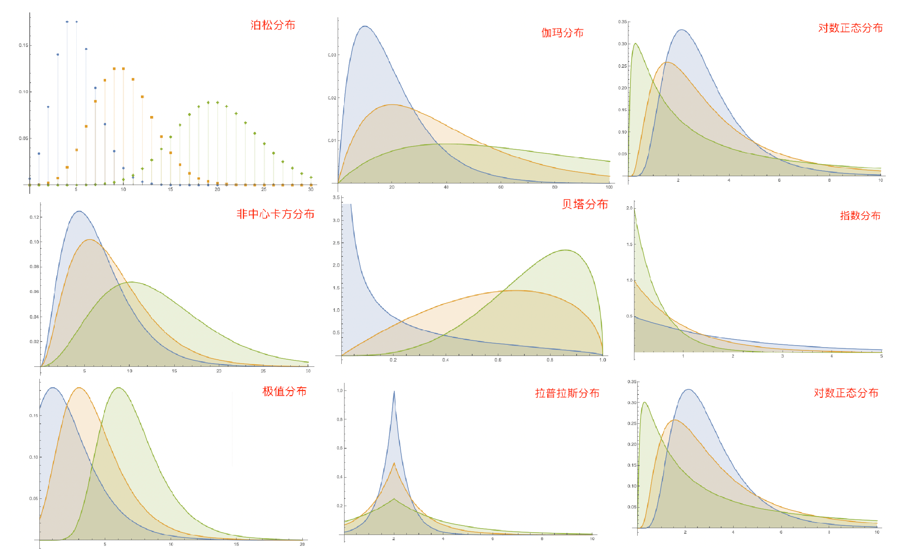
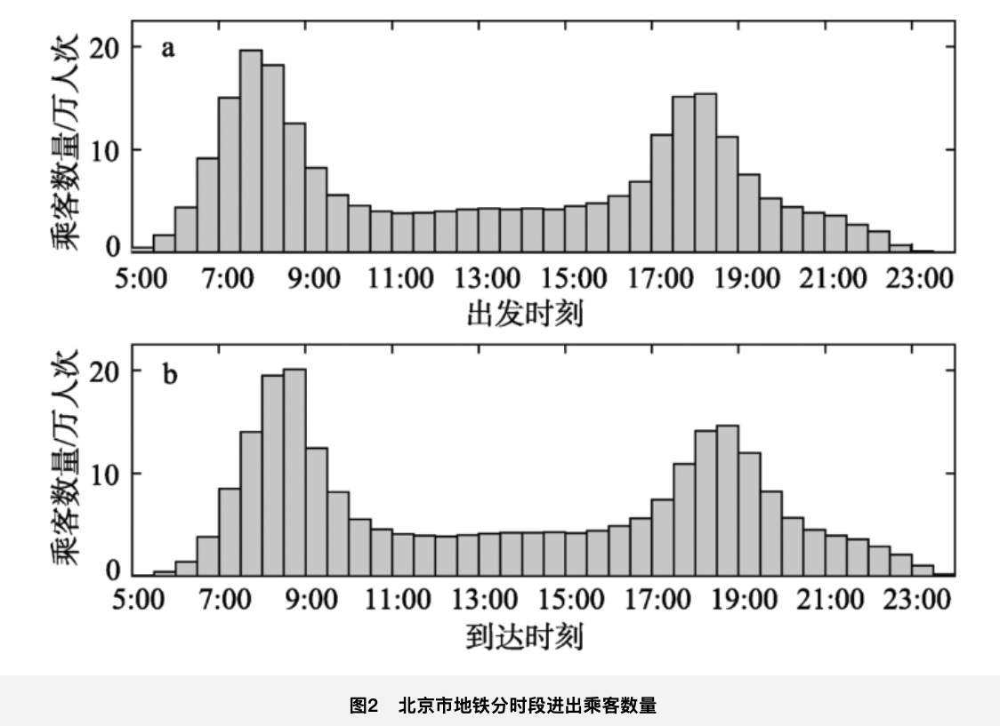
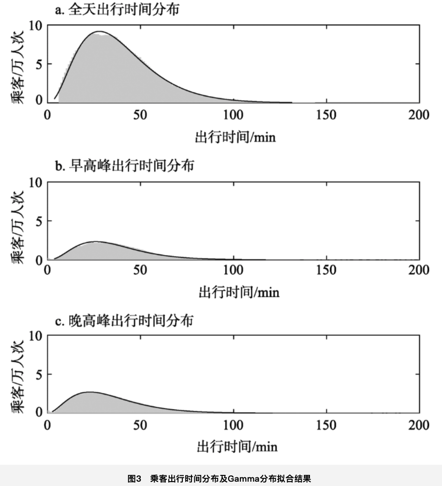
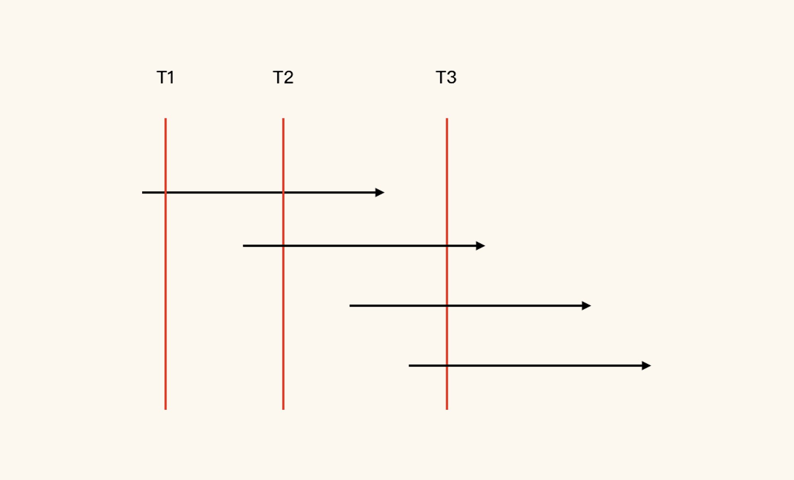
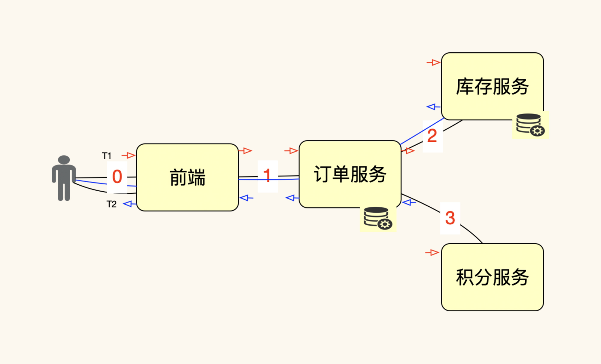

- 00 开篇词 打破四大认知局限，进阶高级性能工程师.md.html
- 01 性能工程：为什么很多性能测试人员无法对性能结果负责？.md.html
- 02 关键概念：性能指标和场景的确定.md.html
- 03 核心分析逻辑：所有的性能分析，靠这七步都能搞定.md.html
- 04 如何构建性能分析决策树和查找瓶颈证据链？.md.html
- 05 性能方案：你的方案是否还停留在形式上？.md.html
- 06 如何抽取出符合真实业务场景的业务模型？.md.html
- 07 性能场景的数据到底应该做成什么样子？.md.html
- 08 并发、在线和TPS到底是什么关系？.md.html
- 09 如何设计全局和定向监控策略？.md.html
- 10 设计基准场景需要注意哪些关键点？.md.html
- 11 打开首页之一：一个案例，带你搞懂基础硬件设施的性能问题.md.html
- 12 打开首页之二：如何平衡利用硬件资源？.md.html
- 13 用户登录：怎么判断线程中的Block原因？.md.html
- 14 用户信息查询：如何解决网络软中断瓶颈问题？.md.html
- 15 查询商品：资源不足有哪些性能表现？.md.html
- 16 商品加入购物车：SQL优化和压力工具中的参数分析.md.html
- 17 查询购物车：为什么铺底参数一定要符合真实业务特性？.md.html
- 18 购物车信息确定订单：为什么动态参数化逻辑非常重要？.md.html
- 19 生成订单信息之一：应用JDBC池优化和内存溢出分析.md.html
- 20 生成订单信息之二：业务逻辑复杂，怎么做性能优化？.md.html
- 21 支付前查询订单列表：如何分析优化一个固定的技术组件？.md.html
- 22 支付订单信息：如何高效解决for循环产生的内存溢出？.md.html
- 23 决定容量场景成败的关键因素有哪些？.md.html
- 24 容量场景之一：索引优化和Kubernetes资源分配不均衡怎么办？.md.html
- 25 容量场景之二：缓存对性能会有什么样的影响？.md.html
- 26 稳定性场景之一：怎样搞定业务积累量产生的瓶颈问题？.md.html
- 27 稳定性场景之二：怎样搞定磁盘不足产生的瓶颈问题？.md.html
- 28 如何确定异常场景的范围和设计逻辑？.md.html
- 29 异常场景：如何模拟不同组件层级的异常？.md.html
- 30 如何确定生产系统配置？.md.html
- 31 怎么写出有价值的性能报告？.md.html
- 我们这个课程的系统是怎么搭建起来的？.md.html
- 结束语 做真正的性能项目.md.html
- 捐赠
08 并发、在线和TPS到底是什么关系？
你好，我是高楼。
在性能领域中，我们经常用“并发用户数”来判断一个系统是否达到性能需求，比如说用“系统支持1000用户”这样的描述来说明性能需求。但是并发是怎么个并发法？它和TPS之间是什么关系？并发用户数和在线用户数又是什么关系呢？
这样的问题长期以来困扰着性能工程师们。不管是网上看到的文章或者是各个群里的讨论，我们都能听到不同的声音。所以，我即便是冒着引起争论的危险，也要写一下这个问题。
典型的争论
有一天，有个小伙跟我说，他和同事们看到我上一个专栏《性能测试实战30讲》中的文章后，在公司会议室吵翻了天，有一个同事还把微积分都搬出来了。我很高兴听到这样的争论，就像战国时期的稷下学宫一样，不争论，哪有那么辉煌的文明高峰呢。
他们的争论点是这样的：有一个项目，性能目标是对一个底层是Kubernetes、上层是微服务架构的系统进行容量评估（系统性能验证）。而他们的争论点就在于这个容量评估的方法。
对于评估方法，他们分成了两个流派。第一种是根据DAU（Daily Active User，日活跃用户数量）和用户业务模型，推导出并发用户数（工具中未来的线程数）。而第二种反对第一种，认为第一种估算不合理，要站在服务端层面，去推导 服务端要承载的 并发请求数（TPS）。
这个小伙说，在两个流派争论的过程中，有一些概念无法达成一致，包括用户、工具中的线程数、TPS和响应时间。后来他又告诉我，第一种流派的评估方法突出用户，但没有考虑用户的动作。第二种流派则从用户操作的角度出发，按照操作频率，计算“用户操作次数/时间段”，以这个为需要达到的TPS，加上他们自己设定的容忍度RT，反过来推算并发用户数。
在争议的过程中，大家都没说服对方。第一种认为第二种偏差可能会更大；第二种认为，不讲业务指标换算成技术指标就是耍流氓。其中有一个同事，甚至弄出了一个公式：
\(并发用户数 = TPS \\times RT\)
所以，这场争论的结果就是：没有结果。
现在我们不妨思考一下，上面的争论中到底谁对呢？他们给出的公式哪个合理呢？
我给你举个例子来说（为了简化问题，以下示意图不考虑响应时间的变化）：

你看，在这个示意图中，压力线程是5个，在1秒内每个线程可以完成5次请求。根据上面的公式，我们应该得到的结论是：
\(并发 = TPS \\times RT = 25(事务总数) \\times 0.2(响应时间) = 5\)
这个5，显然是并发线程的个数，但是这个并发线程是从用户角度出发的吗？显然不是的。因为从示意图上看，每一个事务才是一个真实的用户。
这就涉及到一个关键的概念，并发到底是什么？
在百度百科上是这样描述的：
并发，在操作系统中，是指一个时间段中有几个程序都处于已启动运行到运行完毕之间，且这几个程序都是在同一个处理机上运行，但任一个时刻点上只有一个程序在处理机上运行。
在WiKi上是这样描述的：
In computer science, concurrency is the ability of different parts or units of a program, algorithm, or problem to be executed out-of-order or in partial order, without affecting the final outcome. This allows for parallel execution of the concurrent units, which can significantly improve overall speed of the execution in multi-processor and multi-core systems. In more technical terms, concurrency refers to the decomposability of a program, algorithm, or problem into order-independent or partially-ordered components or units of computation.
这两个描述看上去有点不太一样，所以我们要理解它们其中的共性和差异。如果你用英文描述的角度来理解并发，我觉得不用运行性能场景就能知道并发是多少，数一下处理器有几个核就行了。如果你用中文描述的角度来理解，那就必须考虑在“时间段”内完成了多少。
说了这么多，你还要注意一点，这些描述都是在处理器的层级来描述的。
那站在用户的角度，你觉得怎么描述更合理呢？在我看来，更合理的描述是：并发是在单位时间内完成的事务（T）的个数。如果这个事务（T）是用户的操作，那就是并发的用户了。
我们现在再回到前面的那个例子，公式中如果对应的是100TPS，就是100并发了。而不是10个并发，因为10个并发是没有“时间段”的概念的。
行业内的谬传
在《性能测试实战30讲》中的第3讲，我也描述过并发和在线之间的关系。其中也描述了两个在网上最常见的且被描述成“业界标准”、“经典公式”的计算公式，来自于一篇Eric Man Wong 写的文章——《Method for Estimating the Number of Concurrent Users》。为了给你省些麻烦，我把这两个公式列在这里。
平均并发用户数的计算（公式一）：- \(C = nL \\div T\)- 其中： C 是平均的并发用户数；n 是 Login Session 的数量；L 是 Login session 的平均长度；T 指考察的时间段长度。
并发用户数峰值计算（公式二）：- \(C’ \\approx C + 3\\times \\sqrt\[\]{C}\)- 其中：C’指并发用户数的峰值，C 就是上一个公式中得到的平均的并发用户数。该公式是假设用户的 Login session 产生符合泊松分布而估算得到的。
显然上述公式中没有提“在线用户数”。而在原文中，“在线用户数”是假设出来的，包括Little定律，和这两个公式的逻辑是一样的。以上两个公式的问题，我在上一个专栏中已经详细描述了，这里不再啰嗦了，如果你有兴趣，可以去看《性能测试实战30讲》中的第3讲。只是在上一篇中，我没有对其中的公式进行详细的解释，所以我觉得写得不够完整。
下面我跟你讲一下这两个公式为什么不能称为“业界标准”、“经典公式”。
首先，在原文中，作者用这张图表达了用户并发的状态。

并且假设了用户到达率是符合泊松分布的，于是代入了泊松分布的公式。作者因为泊松分布是用于对随机和独立事件的到达率进行建模的最可行、最常用的工具，并且在大部分的统计学书中都能找得到，所以就假设了这个前提。
但是，这个跳跃直接就把很多情况给过滤掉了，因为你的系统到达率可能不是泊松分布，而是其他分布，比如说这些分布类型：

如果想确定你的系统是属于哪种分布，就需要分析用户数据。虽然泊松分布很常用，但对于一个特定的系统来说，还是不行的，比如说地铁系统。2018年，有一篇针对北京地铁客流量的分析论文中就有说明，北京地铁客流量随时间分布如下：

针对上述客流进行分析之后，作者得到客流数据是符合伽玛分布的，于是根据不同的高峰时段进行了细分，然后得到如下分布拟合结果：

由此，你就可以知道，在文章《Method for Estimating the Number of Concurrent Users》中，假设用户到达率是符合泊松分布的，只描述了一种可能的结果，所以我们前面提到的这两个计算公式，自然也就不能成为“业界标准”。
平均并发用户数的计算（公式一）：- \(C = nL \\div T\)- 其中： C 是平均的并发用户数；n 是 Login Session 的数量；L 是 Login session 的平均长度；T 指考察的时间段长度。
并发用户数峰值计算（公式二）：- \(C’ \\approx C + 3\\times \\sqrt\[\]{C}\)- 其中：C’指并发用户数的峰值，C 就是上一个公式中得到的平均的并发用户数。该公式是假设用户的 Login session 产生符合泊松分布而估算得到的。
并且在这篇文章中，作者在后面又将泊松分布近似到了正态分布，而第二个公式就是通过标准正态分布中平均值等于0、标准差等于1，对应到标准正态分布的统计表中查找的结果。
那么，问题就来了：
我们的系统是像上图中展示的那样，一个用户和系统没有等待时间的交互吗？这只是假设了一个最简单的场景。如果你的场景不是这个最简单的场景，那公式一就不好使了。
在公式二中假设了C是泊松分布的，这就意味着，你要想使用这个公式，首先就得确定在你的系统中，用户的到达率是符合泊松分布的。而我们在系统中做这样的分析时，你会看到，很多系统都是无法满足这个条件的。
在原文中也说明了，C说的是平均值。正因为是平均值，所以这个C和并发用户的峰值误差会比较大。
公式二是通过将泊松分布近似到标准正态分布中平均值等于0、标准差等于1的情况下得出的，那你想想，你的系统中平均用户数符合这个条件吗？
这两个公式实际上是针对一个最简单的业务，进行的假设推导。而我们的系统，可能支持的是多种业务操作，那对于这些业务操作，我们是否需要把每个都算一遍呢？
在技术的层面，不管是在线用户，还是并发用户，都是要体现到请求级别的。但是这两个公式显然没有达到这个级别。在原文中，作者是拿请求做了示例，但是这只是用来算请求速率和带宽的。
还有一个大问题就是，这种并发用户数估算方法是在一个业务功能上做的。如果一个系统有多个业务功能，那显然就不能这样计算了。
综上，你就可以知道，所谓的“业界公认”的计算公式，其实有很多的限制条件。并且，我们很难在真实的场景中，把它的这个逻辑套用到自己的系统中去。
在2011年，有一篇国内的论文《The Estimation Method of Common Testing Parameters in Software Stress Testing》用了切比雪夫不等式来做的计算，你有兴趣也可以去看一下。
我并不是想否认这些人所做的努力，我只是希望性能从业人员能看清楚问题在哪里。如果你做了各种统计分析之后，发现能够满足原文中的各种假设条件，那上面的公式就可以用。如果不满足，那显然我们不能生搬硬套。
实践出真知
既然我们在行业内对并发用户、在线用户、TPS这个关键的关系如此重视，又没有统一可用的落地参考，而一些人的努力也得不到有效的印证。那我们是不是就没有办法了呢？
当然不是。接下来，我想通过一个具体的实践，让你看到这个关键点的推导逻辑，然后你再来思考如何在自己的系统中落地。
在这里，我用一个电商系统的下单示例来做操作，请你不要过于关注系统是什么类型的，我希望你能瞪大眼睛看清楚这里面的逻辑。
我先说明一下，因为我要做的操作是**从用户角度出发的。所以，在这里我搭建了一个有用户界面的系统来做这个示例，这主要是为了给你讲清楚在线用户、并发用户和TPS之间的关系。
这个示例的前端操作总共有7步，如下所示：

（注：上图中显示的最后一个图是退出后的界面，没有操作，所以总共是7步操作。）
现在我们就是要知道这个操作全过程中产生了哪些请求。具体的请求日志如下所示：
{"client_ip":"59.109.155.203","local_time":"27/Mar/2021:23:16:50 +0800","request":"GET / HTTP/1.1","status":"200","body_bytes_sent":"23293","http_x_forwarded_for":"-","upstream_addr":"127.0.0.1:8180","request_time":"0.001","upstream_response_time":"0.000"}
中间省略98行
{"client_ip":"59.109.155.203","local_time":"27/Mar/2021:23:21:00 +0800","request":"GET /resources/common/fonts/iconfont.ttf?t=1499667026218 HTTP/1.1","status":"200","body_bytes_sent":"159540","http_x_forwarded_for":"-","upstream_addr":"127.0.0.1:8180","request_time":"0.259","upstream_response_time":"0.005"}
这是一个用户从打开首页、登录、选择商品、下单、退出整个流程的全部操作日志，总共100条。我们先不管是静态资源还是接口调用。现在我们主要来说一下，这些请求是怎么转化为TPS的，而TPS和在线用户、并发用户之间又是什么关系。
在线用户和TPS之间的关系
我们一定要从实际操作的级别来看在线用户和TPS之间的关系才可以，要不然只是臆想，是无法服众的。
上面我们已经通过一个用户的操作抓取了相应的日志（包括静态资源）。这个用户也显然就是一个在线用户了。
- 单个在线用户的TPS计算
从上面的时间窗口来看，这个用户的整个操作流程是从23:16:50到23:21:00，时间窗口总共是250秒（这么巧，是一个吉利数字），请求总共是100个。但是我们通常都会设置事务的，对不对？这时我们就得来掰扯掰扯事务是怎么定义的了。
如果你把事务T设置为每个请求一个事务，那显然，你就不用计算了，一个用户需要的就是0.4TPS。对应的TPS计算如下：- \(1(用户)\\times 100(请求数) \\div 250(时间窗口) \\approx 0.4(请求数/秒)\)
如果你把事务定义到每个业务操作的级别，对应前面我们说的，总共是7个业务操作，而这7个业务操作是在250秒内完成的，那对应的TPS就是：- \(1(用户)\\times 7(单业务操作级事务)\\div 250(时间窗口)\\approx 0.028 (TPS)\)
也就是说如果你把事务定义在业务操作级别，在这个示例中，一个用户就需要0.028TPS。请注意，这里面的每一个事务的请求数并不一致哦。
如果你把事务定义到整个用户级别（通常情况下，业务部门会这样要求，因为只有做完了这些步骤才是一个业务完成了），那显然这250秒内只完成了1个事务。那对应的TPS就是：- \(1(用户)\\times 1(完整用户级事务)\\div 250(时间窗口) \\approx 0.004 (TPS)\)
你看，把事务大小定义在不同级别时，我们得到的结果必然是不一样的。所以，我们如果在项目中只是简单地说，性能需求是要达到多少多少TPS这样的笼统需求，就必然会导致不同的人理解的TPS内容不一样。所以，如果有人让你实现1000TPS，那你就要问，T是什么级别的？
请你注意，在这个逻辑中，我没有把业务模型加进来一起讨论，因为加了业务模型，反而会让问题变得更复杂。
- 多在线用户的TPS计算
上面的计算是根据一个用户的操作进行的，那如果是另一个用户呢？再操作一遍指定不会是恰好250秒了吧。并且，如果有成千上万个用户呢？那也必然不会全都用250秒。所以，这个前提条件就成了一个难点。
为此，我们先假设（注意，我这里做的假设只是为了后续的计算方便，并不是说这个假设条件是成立的）系统中有100000用户都是平均250秒完成业务，并且是在一个小时内完成的（这个数据已经非常集中了）。那你就可以计算需要多少TPS了。
请求级的TPS：- \((100000(用户) \\times 100(请求数)) \\div 3600(秒) \\approx 2,777.78(TPS)\)
单业务操作级TPS：- \((100000(用户) \\times 7(业务操作))) \\div 3600(秒) \\approx 194.44(TPS)\)
用户级TPS：- \((100000(用户) \\times 1(用户级) \\div 3600(秒) \\approx 27.78(TPS)\)
通过这样的计算，我们就可以知道需要多少TPS来和在线用户对应。
- 峰值在线用户的TPS计算
显然上面是按一小时内所有的用户都平均分布的方式算的，如果有峰值呢？这个算法就不对了吧？这就是为什么我说要历史业务峰值的原因，具体统计过程请见我们第6讲内容。
线上业务峰值的统计时间段越短，显然是越准确的。如果我们从生产上统计出来10万用户是在1小时内完成的。其中，1万用户在1个小时内的某1分钟内完成业务。这样的数据其实已经达到大型电商的秒杀级别了。那根据上面的计算方式，我们可以得到：
请求级的TPS：- \((10000(用户) \\times 100(请求数)) \\div 60(秒) \\approx 16,666.67(TPS)\)
单业务操作级TPS：- \((10000(用户) \\times 7(业务操作))) \\div 60(秒) \\approx 1,166.67(TPS)\)
用户级TPS：- \((10000(用户) \\times 1(用户级) \\div 60(秒) \\approx 166.67(TPS)\)
想要得到精确的峰值TPS，其实很明显的前提就是统计的时间段够不够精准。
通过以上的计算过程，我们可以知道在包括静态资源的时候，在线用户数怎么转化到相对应的不同级别的TPS。对于不包括静态资源的计算过程，你也可以根据上面的逻辑自行计算。
并发用户和TPS之间的关系
从上面的在线用户计算示例中，相信你已经发现，在日志中两个操作之间的是有时间间隔的。那如果一个用户在操作的时候没有间隔，TPS应该是多少呢？
通过JMeter录制浏览器的行为，我们先把同样的操作步骤变成JMeter脚本，然后再回放一下，抓一下日志，看看在没有停顿的时候，一个完整的用户流程需要多长时间。日志如下：
{"client_ip":"59.109.155.203","local_time":"28/Mar/2021:01:08:56 +0800","request":"GET / HTTP/1.1","status":"200","body_bytes_sent":"23293","http_x_forwarded_for":"-","upstream_addr":"127.0.0.1:8180","request_time":"0.109","upstream_response_time":"0.109"}
中间省略98行
{"client_ip":"59.109.155.203","local_time":"28/Mar/2021:01:09:02 +0800","request":"GET /resources/common/fonts/iconfont.ttf?t=1499667026218 HTTP/1.1","status":"200","body_bytes_sent":"159540","http_x_forwarded_for":"-","upstream_addr":"127.0.0.1:8180","request_time":"0.005","upstream_response_time":"0.005"}
从时间戳上来看，从第一个请求到最后一个请求，共有100个请求，总共用了6秒（请你注意这个响应时间，为了让你看得更清楚，我只截了一个用户的完整请求。实际上这里应该是用压力场景中的包括这些请求的平均响应时间）。
同样地，我们来计算一下对应的TPS。
请求级的TPS：- \(1(用户) \\times 100(请求数) \\div 6(秒) \\approx 16.67(TPS)\)
单业务操作级TPS：- \(1(用户) \\times 7(业务操作) \\div 6(秒) \\approx 1.17(TPS)\)
用户级TPS：- \(1(用户) \\times 1(用户级) \\div 6(秒) \\approx 0.17(TPS)\)
我们可以对应算一下，一个没有停顿的用户（并发用户）相当于多少个有停顿的用户（在线用户）呢？在这个转换的过程中，我们暂时不考虑请求的区别。那么，显然是：
\(16.67\\div0.4=1.17\\div0.028=0.17\\div0.004 ≈ 41.79（倍）\)
你用哪个级别的TPS来算都是一样的。
这样，我们就清楚了，并发度就是：
\(1(并发用户) \\div 41.79(在线用户) \\approx 2.4\\% (也即是6/250) \)
那么，如果你录制了脚本并且没有设置停顿时间（你可以叫Think Time或等待时间），如果你想支持的是10万在线用户在一小时内完成所有业务，那么支持的对应并发用户数就是：
\( 100000(在线用户)\\times 2.4\\% = 2,400(并发用户) \)
而我们一个线程跑出来的请求级的TPS是16.67，要想模拟出10万用户的在线，我们需要的压力线程数就是：
\(2,777.78(10万在线用户时的请求级TPS) \\div 16.67(一个压力线程的请求级TPS) \\approx 167(压力线程)\)
讲到这里，我们总结一下前面所讲的公式。
在线用户数和压力线程之间的关系：
用请求级TPS计算：
\(压力线程 = \\frac{(在线用户数 \\times 单用户请求数)}{峰值采样时间段} \\div 一个压力线程的请求级TPS\)
用单业务操作级TPS计算：
\(压力线程 = \\frac{(在线用户数 \\times 单用户业务操作数)}{峰值采样时间段} \\div 一个压力线程的业务操作级TPS\)
用用户级TPS计算：
\(压力线程 = \\frac{(在线用户数 \\times 单用户完整业务数(也就是1)}{峰值采样时间段} \\div 一个压力线程的用户级TPS\)
并发用户数的计算：
- \(并发用户数 = 在线用户数\\times\\frac{有停顿时间的单线程TPS}{无停顿时间的单线程TPS}\)
并发度：
- \(并发度 = \\frac{并发用户}{在线用户} \\times 100\\% （取值要在同一时间段）\)
从以上的计算逻辑中，我们可以看到，这其中有几个关键数据：
- 在线用户数。这个值可以从日志中取到；
- 在线用户数统计的时间段。这个值也可以从日志中取到；
- 用户级操作的完整业务流时间（记得多采样一些数据，计算平均时间）。这个值也是从日志中取到；
- 无停顿时间的完整业务流时间。这个值从压力工具中可以取到；
- 单用户完整业务流的请求数。这个值可以从日志中取到。
“思考时间”到底怎么用？
在性能行业中，在线用户和并发用户换算的过程里，有一个概念我们是万万不能跳过的，那就是“思考时间”。因为有太多的人想用思考时间来描述真实在线用户操作时的停顿了，所以，下面我们就来说说这个重要的概念。
思考时间自从Mercury（LoadRunner最原始的厂商）进入中国市场灌输BTO（Business Technique Optimization）概念时，就随着LoadRunner的普遍使用而渐渐地深入人心。
但是，如果你想用它，却没有那么容易。
在前面的示例中，我们看到了一个用户的完整的业务流操作用了250秒，其中就包括了思考时间。对于用户来说是做了7个操作，但是对于系统来说是什么呢？我们先看一下这些操作在时间上的分布。

（注：上图中多出来的请求是一些自动触发的，我们可以忽略掉。）
你可以看到，每个操作之间实际上都是有间隔的。而这个时间间隔就是我们在性能脚本中经常说的思考时间（Think Time）。如果你想设置思考时间，就得把每两个操作之间的时间间隔拿到。
并且，注意哦！你不是只取一个用户的就够了，而是要把大量的真实用户的操作时间间隔拿到，然后再做平均值、标准方差的计算，最后再配置到压力工具中。
在我的工作经验中，几乎没有一家企业可以做到这一点的。每当我看到这样的情形时，我都建议他们不要用思考时间了，因为即使用了也并不能说明他们模拟了真实用户的行为。
为什么不能用用户会话的超时时间来计算？
因为用户的在线时间比较难统计，并且操作的间隔也比较难得到，所以有人提出用用户登录之后的会话（Session）超时时间来做计算。我先画一个示意图，再来给你解析一下。

（注：在上图中，一个带箭头的线表示一个完整的用户级的业务流操作。）
用这个思路来计算并发用户的人，通常都会这样说：
你看，一个用户进入系统之后会做一些操作，这时并发是1；但第一个用户还没操作完，第二个用户就进来了，这时的并发就是2；那也有可能用户接着进来，所以并发也有可能变成3…
是不是看起来非常合理？在我们前面提到的那个《Method for Estimating the Number of Concurrent Users》中就用了这个思维逻辑。那问题是什么呢？问题有两个：
问题1，你能画出图中的红线吗？显然不能，因为它们是时间点呀！你在系统中做统计的时候，怎么可能拿到时间点的数据呢？不管你的日志记得有多细，就算到纳秒级，那也是时间段。
问题2，在系统中，用户的行为可以像图中这样用一条直线来表示吗？显然也不能，从前面我们截的用户操作间隔图中就可以看到，一个用户在操作期间都认为自己是在线的，但是在请求的级别，中间其实是有停顿的。所以，即使一个用户一直在系统中操作，他发出的请求，也不会像水流一样源源不断。
我们知道，Session是一串保存在用户端和系统中的字符串。在用户和系统交互的过程中，带着Session就可以识别请求。但是，并不是说用户和系统因为Session的存在，就一直有交互并且没有间隔。
所以，计算Session个数，可以让我们知道有多少用户是在线的，但是，并不是说这些用户和系统有交互。
对于Session的配置，如果它的有效期是30分钟，那在这30分钟内，用户的操作都会被识别。但是，在这30分钟内，用户并不见得要有请求，就连TCP连接都可能没有保持。对于短连接的系统，请求结束，TCP连接会立即断掉；对于长连接系统，我们要发心跳才能保持连接，不过也仅仅是保持连接，也不见得有数据交互。
所以，Session仅仅是消耗着保存字符串的那部分内存，来做用户和系统之间的识别，并不能用来做性能中的并发用户数计算。
RPS和TPS之间到底有没有争议？
我记得在网上看到过一篇文章，大意是说不建议用TPS（每秒事务数）来衡量系统的性能，而是建议用RPS（每秒请求数）衡量。并且，文章把TPS模式描述为“令人震惊的存在行业多年的误操作”。在我的学员群中，也有过类似的讨论。
对于RPS和TPS，你可以看到很多人各执一词，并且针锋相对。关键是，这些人居然谁都说服不了谁，然后这个问题就变成了一个哲学问题。
看了一圈文章之后，如果我理解的没错，大概的争议点是这样的：
TPS是从压力工具的角度来说的，但是因为TPS会受到响应时间的影响，所以不建议采用TPS模式。
在接口串行请求时，由于各种异常问题的出现，TPS不能反映出后端服务的每秒请求数。
TPS反映的是业务视角，RPS反映的是服务端视角。
这些说法看似是成立的，但是有什么误差呢。下面我们来一条一条理解一下。
在请求-响应的同步逻辑中，TPS必然是和响应时间成反比关系的。那么受响应时间影响，TPS也是合情合理的。而我们要分析的就是，这种响应时间会变长的性能问题。难道用了RPS模式就不关注响应时间了吗？
在异步逻辑中，我们要是只关注发送出去多少请求，显然无法反映出系统的完整的处理能力。所以，第一点争论其实是不存在的。
即便接口是串行的，并且后端流程长，会在各个节点产生多个请求，那后端请求也肯定是大于压力工具中的TPS的。那在一个固定的场景中，压力工具中的TPS和后端的请求数，不是必然成线性关系吗？
如果有异常出现，有报错啥的，导致了后端某些服务的请求变少了，这种情况不就正是我们要分析的性能问题吗？ 所以，第二点也是不应该有争议的。
这个说法就更奇怪了。本来就没有人把压力工具中的TPS和服务端的RPS混为一谈。这两者是不同的统计手法，为什么会作为争议出现呢？它们本来就在不同的角度，更不应该做为对立的论点呀。所以，第三点也是不应该有争议的。
我用一个示意图来说明一下请求和TPS之间的关系：

如上图所示，如果压力工具中的一个线程（图中人的位置）发出一个请求（也就是在图中0的位置），系统中共产生了4个请求（图中的0、1、2、3位置）。不管这些请求是同步还是异步，这些请求都是真实存在的。如果再来一个线程，也发同样的一个请求，那系统中必然总共产生8个请求，这个逻辑很清楚。
如果我们把压力工具中线程的请求做为一个T（压力工具中的事务数），那它对应的后端就应该是4个R（后端请求总数）。请你注意，在压力工具中是无法统计出后端的4个请求的，而且，这也是没有必要统计的。这个统计工作，我们应该留给业务监控、日志监控的系统去做，不用再去增加压力工具的负担。
显然请求和TPS是线性关系，除非你发的不是这个请求，而是其他的请求，或者是你改变了参数。
如果你愿意关注后端RPS，就去关注；如果愿意关注压力工具的TPS，也无所谓。但是，在一个项目的具体实践中，不管是RPS还是TPS，一定要说出来，并且大家都能有同样的理解的。
既然TPS、RPS是线性的，那我们实在是没有必要把这两个角度当成是对立面来看待，因为这不仅会增加性能理解的复杂度，也没有实际的价值。也就是说，这根本就不是一个争议点。
总结
在这节课中，我努力地把在线用户数、并发用户数、并发度和TPS之间的关系做了深入的剖析。如果你在跟不同职位的人沟通时，请注意关心一下他们想说的并发、在线、TPS到底在哪个层级，因为要是不在一个频道上，是无法达成一致结论的。
在你做性能项目时，如果可以取得其中的关键数据，那就可以根据我们前面讲的相应公式做计算。而这个计算逻辑，不止是对HTTP有效，对任何一个协议也都是有效的。
在这节课中，我也把在线用户数、并发用户数、并发度和TPS之间存在的误解做了详细的说明，也对一些行业谬传做了深入的解析。从中你可以知道，偏向业务层或TPS层的思路都是不对的，只有将它们关联起来，才是合理的从技术到业务的思考逻辑。
希望你能理解，并将它们之间的关系真正理透。
课后作业
这就是今天的全部内容，最后请你思考一下：
- 如何获取有效的在线用户的TPS（不管是哪个层级的TPS）？
- 性能场景中不包括静态资源的隐患是什么？
记得在留言区和我讨论、交流你的想法，每一次思考都会让你更进一步。
如果这节课让你有所收获，也欢迎你分享给你的朋友，共同学习进步。我们下一讲再见！
© 2019 - 2023 Liangliang Lee. Powered by gin and hexo-theme-book.